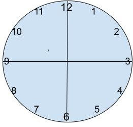
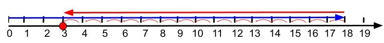

What You Should Know - Gravity Maze: Gravity Word Problems
 Important Vocabulary
Important Vocabulary
- Base Unit - the base units are liter for volume, meter for length, and gram for mass in the metric system
- Kilogram - a unit of mass that is 1000 grams. Kilo is the prefix in the metric system of measurements that is 1000 times the base unit
- Force - is anything that changes the motion of an object
- Mass - in the metric system, the amount of matter in an object
- Standard - an object that is used to show the exact unit of measure
- Velocity - is the speed of something moving in a particular direction
- Weight - the force of gravity on an object (usually measured in pounds) and will change when gravity changes
What Is Gravity?
Gravity is an invisible force. It pulls things towards each other. The bigger the object, the more mass it has and the more it pulls. Smaller objects are attracted to and are pulled towards bigger objects.
Select each tab to learn more.
Measurement Systems
Solving word problems involving measurements requires first remembering how different units are related. Many people still use miles, feet, and inches for distance; pounds and ounces for weight; and gallons, quarts, and ounces for liquids. Each base unit is changed into larger or smaller units with its own pattern.
| 12 inches = 1 foot | 16 ounces = 1 pound | 8 ounces = 1 cup |
| 3 feet = 1 yard | 2000 pounds = 1 ton | 2 cups = 1 pint |
| 5280 feet = 1 mile | 4 cups = 1 quart | |
| 4 quarts = 1 gallon |
The metric system units are easy because all units follow the same pattern. These units are used in science and technology:
Kilo - 1000 times bigger
Hecto - 100 times bigger
Deca - 10 times bigger
Base units: meter, liter, gram
Deci - 0.1 times as big (1/10)
Centi- 0.01 times as big (1/100)
Milli - 0.001 times as big (1/1000)
Measuring time is the same in both systems. Sixty seconds is one minute, and 60 minutes is one hour.
Problem-Solving with Measurements of Time, Distance, and Mass
Think of the steps you need to follow in this problem:
A glass ball reaches the bottom of a gravity maze in 40 seconds. A metal ball reaches the bottom in 35 seconds. How much faster was the metal ball?
This is easy because no changes need to be made to the units; you can calculate your answer in seconds. Now answer this question: How much longer in minutes did the glass ball take to get to the bottom of the gravity maze?
One way to solve this problem is to do the following:
-
First, change both times to fractional parts of a minute: 40 seconds=40/60 minutes and 35 seconds=35/60 minutes.
-
Now simplify both fractions so that they have the same denominator, or bottom number. Both 40 and 35 are multiples of 5, so divide both by 5.

-
Draw a clock face with the times marked to show what the problem is asking. Use a ruler to divide the clock face into 12 equal “wedges” or pieces. Hint: A line will go from 12 to 6 and 9 to 3. Where will the other lines go to show 12 equal parts?

-
Then subtract.
NOTE: An easier way is to subtract the seconds, then change 5 seconds to a fractional part of a minute.

Is the answer the same?
This next problem is about distance:
The top of the maze is 18 cm (centimeters) high. The ball gets stuck at 3 cm. In meters, how far down the maze did the ball travel? (Note: this is not asking for the total distance the ball traveled.)
Use a number line to show what the problem is asking.

This time, do the subtraction first because that makes the calculations a lot easier. Changing from centimeters to meters is easy because everything has a multiple of ten. Divide by 100 to go from centimeters to meters.

Career Connection and Real-World Application
If you describe the distance to a friend’s house in feet, an error of 1 inch won’t make much of a difference. However, if you are measuring and cutting wood, a mistake of 1 inch can result in pieces that don’t fit or gaps between boards. You wouldn’t be satisfied with a house that has large gaps around the doors and windows; rain, snow, hot weather, and cold would easily seep through.

Carpenter/Woodworker
A carpenter follows a design to build houses, kitchen cupboards, and trim around floors and ceilings. They must measure carefully. An acceptable error might be 1/16 of an inch or even 1/32 of an inch. Carpenters also need to understand how gravity pulls down on objects so they can build stable structures and objects.
A woodworker also works with wood but is more like an artist. They design and make special things. A woodworker may make special tables, chairs, or wardrobes. Others make hand-carved toys, custom chests, or art. They must measure even more carefully as they work with smaller objects. Most woodworkers measure with centimeters or even millimeters to have the smallest possible error.
National Institute of Standards and Technology (NIST)
Did you know that the US has a special group of people who make sure that measurements are standard? These people use special equipment to calibrate
measuring tools used to collect data for government agencies. They also check tools used in commerce, research, and manufacturing to help make sure that the units used are the same.
An interesting unit that they standardize is time. NIST uses a special clock called a fountain atomic clock that is part of a worldwide network of atomic clocks. These clocks work together to have an official world time that countries agree upon. Satellites, the internet, and government computers are linked to this time. To find out more, and see more images, check out: NIST-F1 Cesium Fountain Atomic Clock.